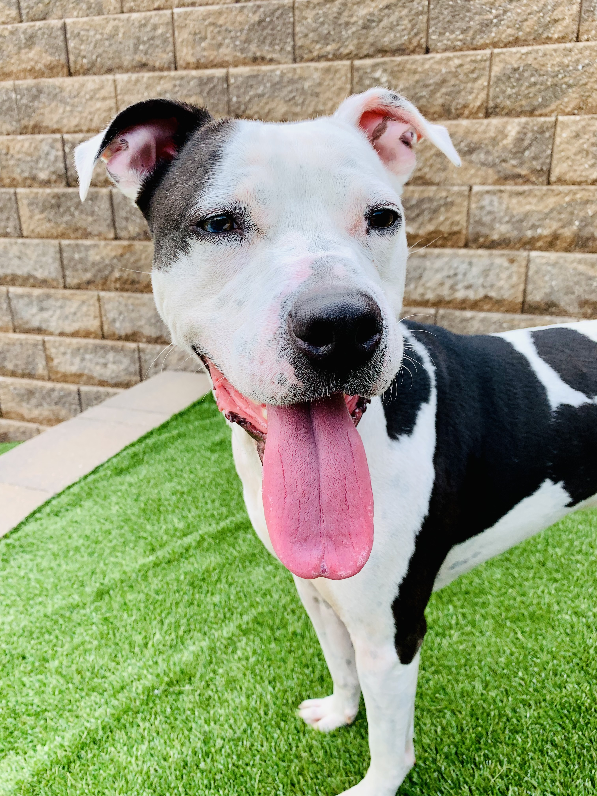
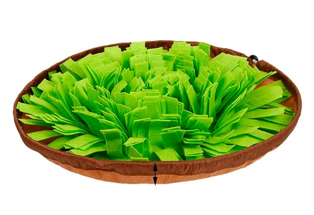

Meet Blaze!
 Hello! Before we get into a few dog training tips, I would like to tell you a little bit about me. My name is Blaze and I am about 4 years old. Only I know of the places I've seen and what I have experienced prior to coming to the shelter in 2020. Yep, that's right - I'm what they call a pandemic pup. This can be a little challenging for my new family but they have been getting to know me more and more each day. It has been two years now that we've been together. Each day is full of exercise, affection and lots of training! My new mom has taught me so much! And now I'm here to share what I've learned in hopes to help other pups like myself.
Patience and Leadership
One of the most important things to remember when training is patience. Not only are you learning how and when to teach, but also what methods work best for your pup - and you are attempting to do so in the most effective and efficient way. This means that you must be patient and stay in control of your emotions. Dogs are tuned into your energy at all times, and are watching your leadership skills. If you do not take the lead, they will. As is true in all dog packs, there must always be a leader!
Reactivity
I am what they call a reactive dog. I let my emotions get the best of me. This can come across as a bit intimidating to those who do not know me. I may squeel very loudly at other dogs or lunge towards what interests me (and even run from what terrifies me!). My mom takes extra care to be sure I am in comfortable environments so that I am confident and relaxed. One way she does this is to be as prepared as possible. This is so important when on walks and at the park. Pay attention to your surroundings - what is coming towards or behind, keep an eye out for loose animals, and watch out for any other triggers. Always keep high value treats handy to distract and redirect, and practice situation management. When you are able to, remove your dog from a potential trigger situation while the dog is still calm. Reward and praise your pup every time they have a successful interaction or redirection! And when they don't, because it will happen, redirect with compassion. Remember that reactivity is fueled by the inability to manage emotions, it is not aggression or purposeful disobeying.
Mental Stimulation
Did you know that you can burn your dog's energy by mental stimulation? Humans are physically unable to fulfill most dog's need for daily exercise. In as few as 10 minutes of training each day, you can make an impact on their energy level. Other great options are nose work games and snuffle mats. These make food time rewarding, as your dog will get to use their foraging and scent skills during the feeding process. I love my snuffle mat! 
*************
Dog training can be challenging but also very rewarding. It is an important investment in the quality of life for the entire family. If your dog has excess energy or reactivity concerns, please consider incorporating some of these ideas into your dog's daily routine! Follow me on Instagram @buggyblaze